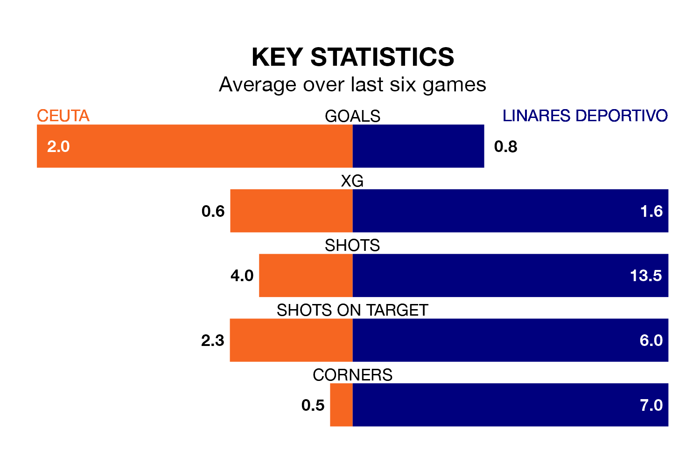

Ceuta are heavy favourites to keep all three points at home in Sunday's early kick-off against Linares Deportivo.
Ceuta, who sit fifth in Primera Division RFEF Group 2 with 31 games played, are priced at 1.5 to seal victory.
Sitting 12 places and 18 points behind them in the table, Linares Deportivo are 6.2 to win with *Betting Company*, while the draw is at 3.6.
With 26 goals in 31 games so far this season, Linares Deportivo are scoring at below the league average rate with 0.8 goals per game. And they are conceding more than average, letting in 40 goals at a rate of 1.3 per game.
Ceuta, meanwhile, are above average scorers, with 1.3 goals per game, compared to a league average of 1.1. They have conceded 1.0 goal per game.
The hosts are in fantastic form in Primera Division RFEF Group 2, with five wins and a draw from their last six games.
With a win and two draws over that period, the away team's form is much worse – they have taken five points from 18, compared to Ceuta's 16.
In Pedro López Galisteo, Ceuta can rely on one of the league's safest pair of hands. He has kept nine clean sheets in his 23 appearances this season in Primera Division RFEF Group 2.
In Linares Deportivo's net, Samuel Casado Conde has five clean sheets in 17 games. He has conceded a goal every 67 minutes, 60% more often than the 104 minutes between goals for López Galisteo.
In the last three years, Ceuta and Linares Deportivo have played each other on three occasions. They won one each, and they drew once.
Their last meeting was on October 8, when Linares Deportivo won 2-1 at home.
Ceuta's last match was on April 7, a 1-1 draw against Málaga CF, with Cedric Wilfried Teguia Noubi getting the goal for Ceuta.
Linares Deportivo lost 1-0 against Antequera CF last time out, also on April 7.
Updated: 10:01 (UTC), 12/04/24